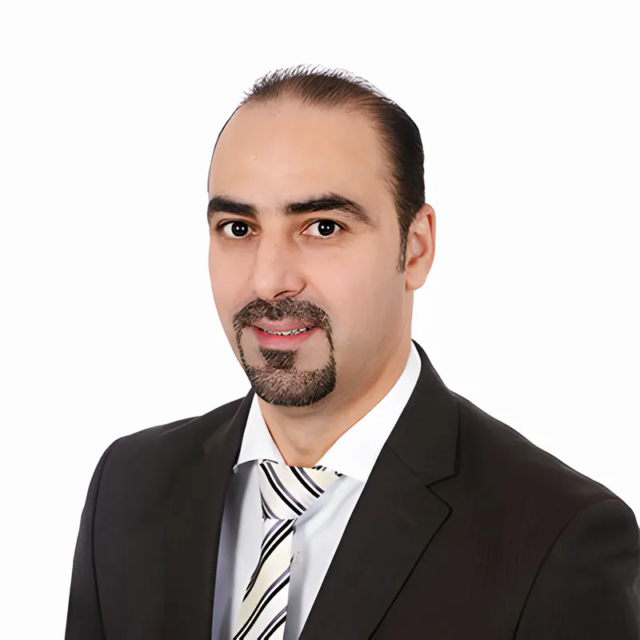

لطفي السلامات
المؤسس والرئيس التنفيذي · CPA
أكثر من 30 سنة في التدقيق والمحاسبة والرقابة الداخلية وخطط العمل. عضو مجلس إدارة Syrian Association for Certified Accountants، وله إسهام طويل في Arab Association for Certified Accountants.
نمسك الدفاتر وندقق الحسابات ونقدّم إقرارات ضريبة القيمة المضافة لأكثر من 150 عميلاً، من الشركات الجديدة في المناطق الحرة إلى الدوائر الحكومية. بالعربية والإنجليزية، من مكتبنا على كورنيش الشارقة.

01 / الخدمات
سبع خدمات، من الدفاتر الشهرية إلى التحقيق في الاحتيال. افتح أي بند لترى ما يشمله، أو اقرأ صفحة الخدمات كاملة.
نناقش النتائج مع الملّاك والمديرين، ولا نكتفي بتسليم التقرير. تفاصيل التدقيق →
سنة تأسيس NAMC. ولمؤسسها لطفي السلامات أكثر من 30 سنة في التدقيق والمحاسبة.
عميل يخدمهم فريقنا من المحاسبين والمدققين والمستشارين.
منطقة حرة وجهة وصندوقاً في قائمة الجهات التي تقبل تقارير تدقيقنا، إضافة إلى البنوك الكبرى في الإمارات.
02 / تقارير التدقيق
تقبل الجهات التالية تقارير التدقيق الصادرة عن NAMC، إمارة بعد إمارة. وتُقدَّم خطط العمل التي نعدّها إلى المناطق الحرة والصناديق نفسها.
03 / الفريق
الإدارة العليا تتابع كل مهمة من أول اجتماع حتى التقرير النهائي. اثنان من الشركاء الثلاثة محاسبان قانونيان معتمدان (CPA).
المؤسس والرئيس التنفيذي · CPA
أكثر من 30 سنة في التدقيق والمحاسبة والرقابة الداخلية وخطط العمل. عضو مجلس إدارة Syrian Association for Certified Accountants، وله إسهام طويل في Arab Association for Certified Accountants.

شريك مدير · CPA
المحاسبة والتدقيق والضرائب والرقابة الداخلية والاستشارات الإدارية لشركات كبرى في الإمارات. شغل مناصب إدارية في سوريا والإمارات.

شريك مدير · MBA
يساعد الشركات متعددة الجنسيات على التأسيس والنمو في الشرق الأوسط. متخصص في البنوك والتدقيق والوساطة والشركات المالية، وشغل مناصب إدارية في سوريا وتركيا ومصر والإمارات.
دوائر حكومية، وإعلام، ونقل، ورعاية صحية، وعقارات، وأغذية، وشركات تجارية.
04 / تقييم ضريبي مجاني
أجب عن أسئلة قصيرة عن طريقة عمل شركتك، ونقدّم لك استشارة مجانية. هذه بعض الأسئلة التي نطرحها.
مكتب رقم 1501، أبراج بل رشيد 1، شارع الكورنيش، المجاز، الشارقة
تقييم 4.8 على Google من 48 مراجعة.
| السبت | 09:00 – 19:00 |
| الأحد | 09:00 – 19:00 |
| الاثنين | 09:00 – 19:00 |
| الثلاثاء | 09:00 – 19:00 |
| الأربعاء | 09:00 – 19:00 |
| الخميس | 09:00 – 19:00 |
| الجمعة | مغلق |